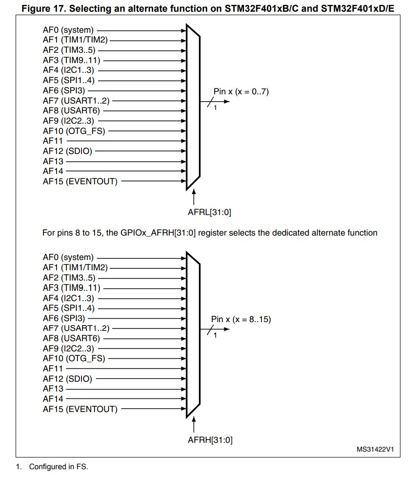

GPIO
GPIO，俗称IO口，是一类可以由程序设定高低电平的引脚，从而实现自定义的设备通信。
MCU 一共有5个GPIO端口：A, B, C, D, H，这些端口挂载到了AHB1总线下，因此在使用之前，需要开始时钟。
RCC_AHB1PeriphClockCmd(RCC_AHB1Periph_GPIOx, ENABLE);
将x更换为需要开启的GPIO端口。
GPIO 基本操作流程
某些旧的编译器必须把变量声明放在函数体最前端，这时需要把 GPIO_InitTypeDef GPIO_InitSructure; 放在第一行。
将 GPIOx 更换为需要 设定的 GPIO 。
// 首先开启时钟
RCC_AHB1PeriphClockCmd(RCC_AHB1Periph_GPIOx, ENABLE);
// 声明一个端口状态结构体
GPIO_InitTypeDef GPIO_InitSructure;
// 设置结构体的值
GPIO_InitSructure.GPIO_Pin = GPIO_Pin_12; // 设置第12号引脚
GPIO_InitSructure.GPIO_Mode = GPIO_Mode_OUT; // 设置为输出模式
GPIO_InitSructure.GPIO_Speed = GPIO_Speed_2MHz; // 设置引脚最大切换速度2MHz
GPIO_InitSructure.GPIO_PuPd = GPIO_PuPd_NOPULL; // 不进行上拉和下拉
GPIO_InitSructure.GPIO_OType = GPIO_OType_PP; // 设置推挽输出模式
// 应用设置到 GPIOx 上
GPIO_Init(GPIOx, &GPIO_InitSructure);
GPIO 数据类型
端口状态结构体
typedef struct{
uint32_t GPIO_Pin; // 目标针脚
GPIOMode_TypeDef GPIO_Mode; // 管脚工作模式
GPIOSpeed_TypeDef GPIO_Speed; // 管脚工作速度
GPIOPuPd_TypeDef GPIO_PuPd; // 设置上拉或下拉
GPIOOType_TypeDef GPIO_OType; // 设置管脚输出类型
}GPIO_InitTypeDef;
该结构体用于设定 GPIO 的状态。
GPIO_PinGPIO_Pin_0 ~ GPIO_Pin_15, GPIO_Pin_All
GPIO_ModeGPIO_Mode_IN, GPIO_Mode_OUT, GPIO_Mode_AF, GPIO_Mode_AN
GPIO_SpeedGPIO_Speed_2MHz, GPIO_Speed_25MHz, GPIO_Speed_50MHz, GPIO_Speed_1000MHz
GPIO_PuPdGPIO_PuPd_NOPULL, GPIO_PuPd_UP, GPIO_PuPd_DOWN
GPIO_OTypeGPIO_OType_PP, GPIO_OType_OD
GPIO 函数
重置端口
void GPIO_DeInit(GPIO_TypeDef* GPIOx);
该函数将选中的端口设置为默认状态(DISABLE)
GPIOxGPIOA, GPIOB, GPIOC, GPIOD, GPIOH
示例：
// 将 GPIOA 端口重置
GPIO_DeInit(GPIOA);
初始化端口
void GPIO_Init(GPIO_TypeDef* GPIOx, GPIO_InitTypeDef* GPIO_InitSructure);
该函数将选中的端口设置为软件设定的状态。
GPIOxGPIOA, GPIOB, GPIOC, GPIOD, GPIOH
GPIO_InitSructure端口状态结构体指针。
示例：
// 声明一个端口状态结构体
GPIO_InitTypeDef GPIO_InitSructure;
// 设置结构体的值
GPIO_InitSructure.GPIO_Pin = GPIO_Pin_12; // 设置第12号引脚
GPIO_InitSructure.GPIO_Mode = GPIO_Mode_OUT; // 设置为输出模式
GPIO_InitSructure.GPIO_Speed = GPIO_Speed_2MHz; // 设置引脚最大切换速度2MHz
GPIO_InitSructure.GPIO_PuPd = GPIO_PuPd_NOPULL; // 不进行上拉和下拉
GPIO_InitSructure.GPIO_OType = GPIO_OType_PP; // 设置推挽输出模式
// 应用设置到 GPIOA 上
GPIO_Init(GPIOA, &GPIO_InitSructure);
初始化端口状态结构体
void GPIO_StructureInit(GPIO_InitTypeDef* GPIO_InitSructure);
将传入的结构体设定为默认值。
GPIO_Pin_All, GPIO_Mode_IN, GPIO_Speed_2MHz, GPIO_OType_PP, GPIO_PuPd_NOPULL
GPIO_InitSructure端口状态结构体指针
示例：
// 声明一个端口状态结构体
GPIO_InitTypeDef GPIO_InitSructure;
// 对结构体进行默认初始化
GPIO_StructureInit(&GPIO_InitSructure);
锁定端口配置
void GPIO_PinLockConfig(GPIO_TypeDef* GPIOx, uint16_t GPIO_Pin);
直到下次复位之前，设定的管脚的工作模式不可改变。
GPIOxGPIOA, GPIOB, GPIOC, GPIOD, GPIOH
GPIO_PinGPIO_Pin_0 ~ GPIO_Pin_15, GPIO_Pin_All
示例：
// 锁定 GPIOA 的 10 引脚工作模式
GPIO_PinLockConfig(GPIOA, GPIO_Pin_10);
读取引脚输入
uint8_t GPIO_ReadInputDataBit(GPIO_TypeDef* GPIOx, uint16_t GPIO_Pin);
读取单个引脚电平高低。
GPIOxGPIOA, GPIOB, GPIOC, GPIOD, GPIOH
GPIO_PinGPIO_Pin_0 ~ GPIO_Pin_15, GPIO_Pin_All
引脚的值
示例：
// 读取 GPIOA 的第 10 引脚的值
uint8_t value;
value = GPIO_ReadInputDataBit(GPIOA, GPIO_Pin_10);
读取端口输入
uint16_t GPIO_ReadInputData(GPIO_TypeDef* GPIOx);
读取整个端口的值。
GPIOxGPIOA, GPIOB, GPIOC, GPIOD, GPIOH
端口的值
示例：
// 读取 GPIOA 的值
uint16_t value;
value = GPIO_ReadInputData(GPIOA);
读取引脚输出
uint8_t GPIO_ReadOutputDataBit(GPIO_TypeDef* GPIOx, uint16_t GPIO_Pin);
读取单个引脚电平高低。
GPIOxGPIOA, GPIOB, GPIOC, GPIOD, GPIOH
GPIO_PinGPIO_Pin_0 ~ GPIO_Pin_15, GPIO_Pin_All
引脚的值
示例：
// 读取 GPIOA 的第 10 引脚的值
uint8_t value;
value = GPIO_ReadInputDataBit(GPIOA, GPIO_Pin_10);
读取端口输出
uint16_t GPIO_ReadOutputData(GPIO_TypeDef* GPIOx);
读取整个端口的值。
GPIOxGPIOA, GPIOB, GPIOC, GPIOD, GPIOH
端口的值
示例：
// 读取 GPIOA 的值
uint16_t value;
value = GPIO_ReadInputData(GPIOA);
GPIO 引脚工作在 INPUT 或 OUTPUT 模式下，可以读取端口的值。
读取输入只能在 INPUT 模式使用，读取输出只能在 OUTPUT 模式使用。
将指定位置位
void GPIO_SetBits(GPIO_TypeDef* GPIOx, uint16_t GPIO_Pin);
GPIOxGPIOA, GPIOB, GPIOC, GPIOD, GPIOH
GPIO_PinGPIO_Pin_0 ~ GPIO_Pin_15, GPIO_Pin_All
示例：
// 将 GPIOA 的 10 引脚置位
GPIO_SetBits(GPIOA, GPIO_Pin_10);
将指定位复位
void GPIO_ResetBits(GPIO_TypeDef* GPIOx, uint16_t GPIO_Pin);
GPIOxGPIOA, GPIOB, GPIOC, GPIOD, GPIOH
GPIO_PinGPIO_Pin_0 ~ GPIO_Pin_15, GPIO_Pin_All
示例：
// 将 GPIOA 的 10 引脚复位
GPIO_ResetBits(GPIOA, GPIO_Pin_10);
写入引脚
void GPIO_WriteBit(GPIO_TypeDef* GPIOx, uint16_t GPIO_Pin, BitAction BitVal);
置位或复位指定的引脚。
GPIOxGPIOA, GPIOB, GPIOC, GPIOD, GPIOH
GPIO_PinGPIO_Pin_0 ~ GPIO_Pin_15, GPIO_Pin_All
BitValBit_RESET, Bit_SET
示例：
// 将 GPIOA 的 10 引脚置位
GPIO_WriteBit(GPIOA, GPIO_Pin_10, Bit_SET);
写入端口
void GPIO_Write(GPIO_TypeDef* GPIOx, uint16_t PortVal);
将指定的值写入指定的端口
GPIOxGPIOA, GPIOB, GPIOC, GPIOD, GPIOH
PortVal无符号 16 位整型值
示例：
// 将 0xff00 写入 GPIOA
uint16_t value = 0xff00;
GPIO_Write(GPIOA, value);
翻转指定的引脚
void GPIO_ToggleBits(GPIO_TypeDef* GPIOx, uint16_t GPIO_Pin);
对指定的引脚进行取反操作。
GPIOxGPIOA, GPIOB, GPIOC, GPIOD, GPIOH
GPIO_PinGPIO_Pin_0 ~ GPIO_Pin_15, GPIO_Pin_All
示例：
// 将 GPIOA 的 10 引脚翻转
GPIO_ToggleBits(GPIOA, GPIO_Pin_10);
启用端口复用
void GPIO_PinAFConfig(GPIO_TypeDef* GPIOx, uint16_t GPIO_PinSource, uint8_t GPIO_AF);
将 GPIO 端口设定为其他外设的接口。
GPIOxGPIOA, GPIOB, GPIOC, GPIOD, GPIOH
GPIO_PinSourceGPIO_Pin_0 ~ GPIO_Pin_15
GPIO_AF参数见下表
GPIO_AF_RTC_50Hz: Connect RTC_50Hz pin to AF0 (default after reset)
GPIO_AF_MCO: Connect MCO pin (MCO1 and MCO2) to AF0 (default after reset)
GPIO_AF_TAMPER: Connect TAMPER pins (TAMPER_1 and TAMPER_2) to AF0 (default after reset)
GPIO_AF_SWJ: Connect SWJ pins (SWD and JTAG) to AF0 (default after reset)
GPIO_AF_TRACE: Connect TRACE pins to AF0 (default after reset)
GPIO_AF_TIM1: Connect TIM1 pins to AF1
GPIO_AF_TIM2: Connect TIM2 pins to AF1
GPIO_AF_TIM3: Connect TIM3 pins to AF2
GPIO_AF_TIM4: Connect TIM4 pins to AF2
GPIO_AF_TIM5: Connect TIM5 pins to AF2
GPIO_AF_TIM8: Connect TIM8 pins to AF3
GPIO_AF_TIM9: Connect TIM9 pins to AF3
GPIO_AF_TIM10: Connect TIM10 pins to AF3
GPIO_AF_TIM11: Connect TIM11 pins to AF3
GPIO_AF_I2C1: Connect I2C1 pins to AF4
GPIO_AF_I2C2: Connect I2C2 pins to AF4
GPIO_AF_I2C3: Connect I2C3 pins to AF4
GPIO_AF_SPI1: Connect SPI1 pins to AF5
GPIO_AF_SPI2: Connect SPI2/I2S2 pins to AF5
GPIO_AF_SPI4: Connect SPI4 pins to AF5
GPIO_AF_SPI5: Connect SPI5 pins to AF5
GPIO_AF_SPI6: Connect SPI6 pins to AF5
GPIO_AF_SPI3: Connect SPI3/I2S3 pins to AF6
GPIO_AF_I2S3ext: Connect I2S3ext pins to AF7
GPIO_AF_USART1: Connect USART1 pins to AF7
GPIO_AF_USART2: Connect USART2 pins to AF7
GPIO_AF_USART3: Connect USART3 pins to AF7
GPIO_AF_UART4: Connect UART4 pins to AF8
GPIO_AF_UART5: Connect UART5 pins to AF8
GPIO_AF_USART6: Connect USART6 pins to AF8
GPIO_AF_UART7: Connect UART7 pins to AF8
GPIO_AF_UART8: Connect UART8 pins to AF8
GPIO_AF_CAN1: Connect CAN1 pins to AF9
GPIO_AF_CAN2: Connect CAN2 pins to AF9
GPIO_AF_TIM12: Connect TIM12 pins to AF9
GPIO_AF_TIM13: Connect TIM13 pins to AF9
GPIO_AF_TIM14: Connect TIM14 pins to AF9
GPIO_AF_OTG_FS: Connect OTG_FS pins to AF10
GPIO_AF_OTG_HS: Connect OTG_HS pins to AF10
GPIO_AF_ETH: Connect ETHERNET pins to AF11
GPIO_AF_FSMC: Connect FSMC pins to AF12
GPIO_AF_OTG_HS_FS: Connect OTG HS (configured in FS) pins to AF12
GPIO_AF_SDIO: Connect SDIO pins to AF12
GPIO_AF_DCMI: Connect DCMI pins to AF13
GPIO_AF_LTDC: Connect LTDC pins to AF14 for STM32F429xx/439xx devices.
GPIO_AF_EVENTOUT: Connect EVENTOUT pins to AF15
端口复用MAP

示例：
// 将 GPIOA 的 12 引脚设定为定时器 3 的输出引脚
GPIO_PinAFConfig(GPIOA, GPIO_Pin_12, GPIO_AF_TIM3);